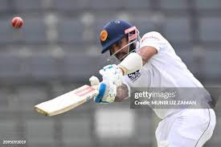
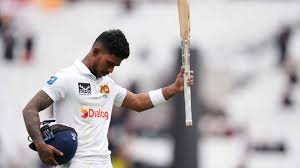

Sri Lanka Test Team
Spin-heavy side with a rich Test history.
About Sri Lanka Test Team
Country: Sri Lanka
Home Ground: Various (e.g., SSC, Colombo)
Captain: Dhananjaya de Silva
Coach: Chris Silverwood
Sri Lanka’s Test team is known for its potent spin bowling and resilient batting, with a strong home record.
Sri-Lankan Players
Dhananjaya de Silva (C)
Captain, all-rounder.
Dimuth Karunaratne
Batsman, reliable opener.

Kusal Mendis
Wicketkeeper-batsman, dynamic.
Angelo Mathews
Batsman, experienced anchor.
Dinesh Chandimal
Batsman, middle-order.
Kamindu Mendis
All-rounder, versatile batsman.
Ramesh Mendis
All-rounder, off-spinner.
Prabath Jayasuriya
Spinner, left-arm orthodox.
Asitha Fernando
Bowler, pace bowler.
Vishwa Fernando
Bowler, left-arm pacer.

Pathum Nissanka
Batsman, top-order.